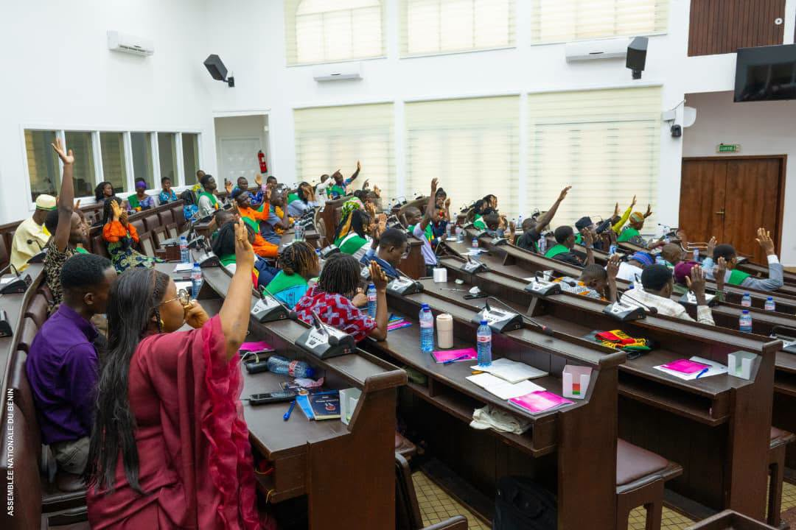
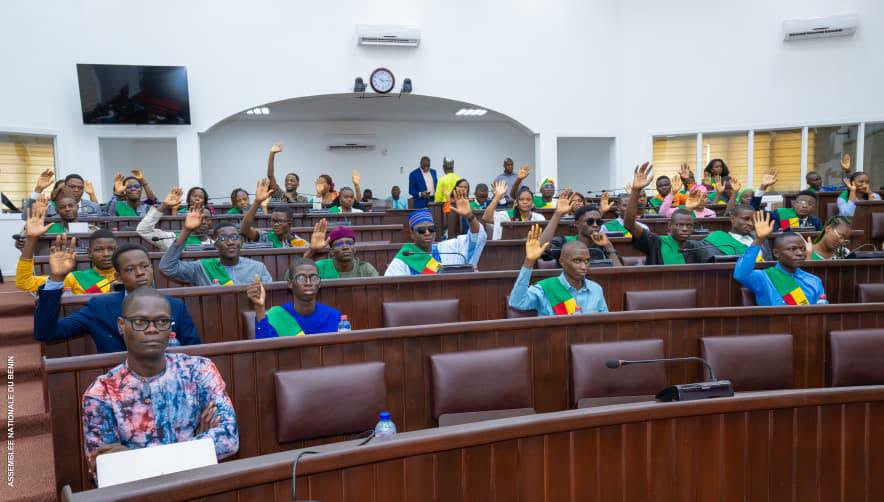
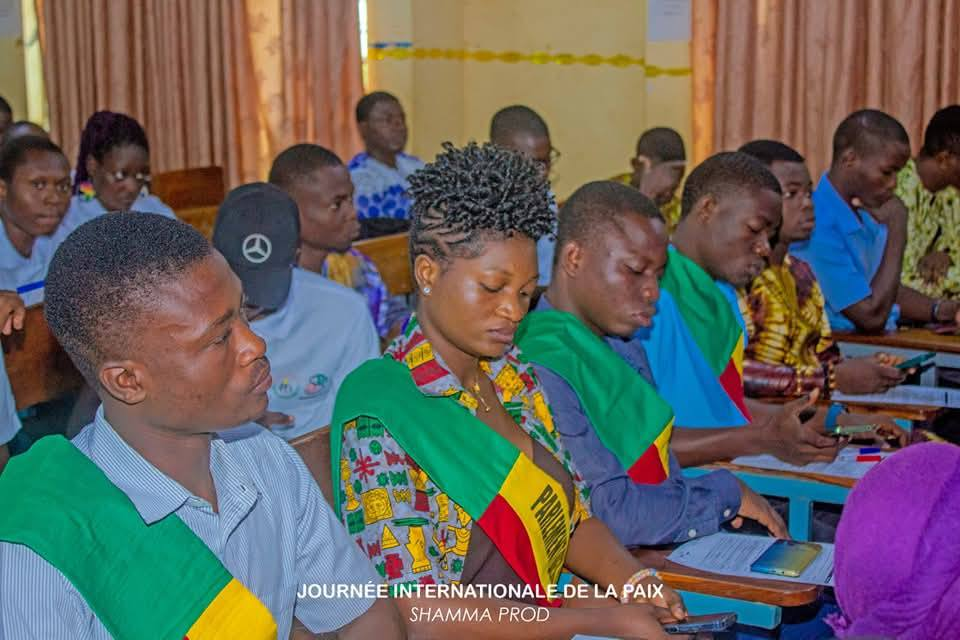
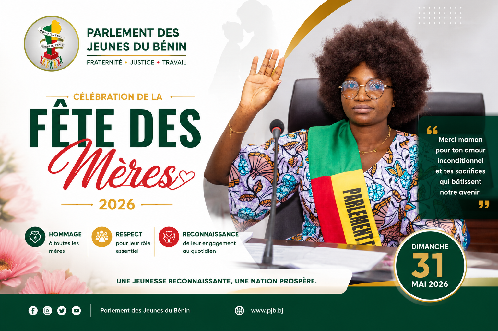
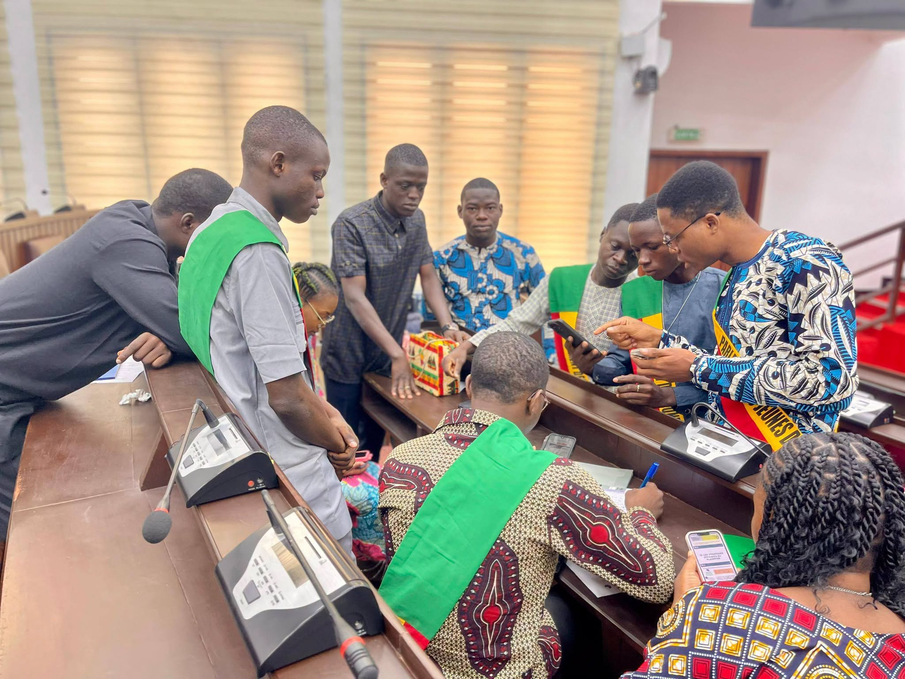

Photo
Session institutionnelle
Travaux officiels et échanges entre jeunes parlementaires.
Un espace visuel pour valoriser les sessions, activités, rencontres et initiatives du Parlement des Jeunes du Bénin.

Travaux officiels et échanges entre jeunes parlementaires.
 ▶
▶
Le Président du PJB lance officiellement les travaux.

Moment d’échange autour des priorités de la jeunesse.

Retour en images sur une activité du PJB.

▶Les femmes du PJB célèbrent la fête des mères 2026.

Réflexion, propositions et recommandations.
Photos officielles des travaux, panels, rencontres et activités parlementaires.
Capsules courtes pour recueillir les idées, préoccupations et propositions citoyennes.
Images des activités locales, initiatives citoyennes et projets à impact.